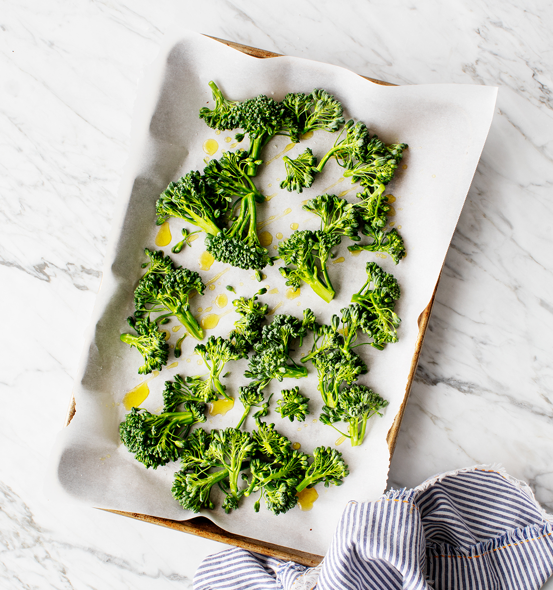

This recipe is inspired by a breakfast rice bowl called Tamago Kake Gohan that we ate over and over again during our trips to Japan. Its name translates to “egg rice,” and that’s basically what it is – a raw egg mixed into piping hot rice. Don’t be scared – the hot rice cooks the egg as you stir it in. The result is the most creamy, delicious bowl of rice you’ve ever had. It’s almost like risotto, but without so much of the stirring!
It’s traditional to top the eggy rice bowl with furikake and Japanese pickles… but of course I topped mine with a bunch of veggie toppings that you can easily find without a trip to a specialty market.
Even though this rice bowl is typically eaten for breakfast, Jack and I like to eat it for dinner. Let’s make it!
To make the base of the rice bowl, start with brown rice, eggs, and a splash of tamari. From there, the simplest way to top the finished bowl is with a sprinkle of sesame seeds, scallions, and sliced nori. If you can’t find nori, just skip it! To make this breakfast bowl more of a dinner, I added roasted broccolini
 1. First, make sure that your rice is freshly cooked and piping hot.
2. Crack the egg over the hot rice.
You can top your rice bowl however you like, this is my basic formula:
Typical Japanese toppings: scallions, sesame seeds, and nori
-A vegetable: roasted broccoli and a few micro greens
-A pickle: pickled ginger, because it’s easier to find than other Japanese pickles
-Something rich: I add sliced avocado to my bowl and an extra egg yolk to Jack’s
-For extra pop: I like to splash a little rice vinegar (or ume vinegar), but that’s optional
1. Preheat the oven to 400°F and line a baking sheet with parchment paper. Place the broccoli florets on the sheet with drizzle with olive oil and pinches of salt and pepper. Toss to coat and spread onto the sheet. Roast until tender and browned around the edges, about 15 minutes.
2. Scoop the cooked brown rice among two bowls. While the rice is piping hot, add 1 egg per bowl along with splashes of tamari, and stir vigorously so that the egg gently cooks as it coats the rice, making the rice a creamy consistency.
3. Top each bowl with the roasted broccoli, scallions, avocado slices, sesame seeds, and desired additional toppings (nori, pickled ginger, microgreens and/or an extra egg yolk). I like to splash my bowl with a little rice wine vinegar or ume vinegar for extra tang. Serve with tamari on the side, for seasoning.